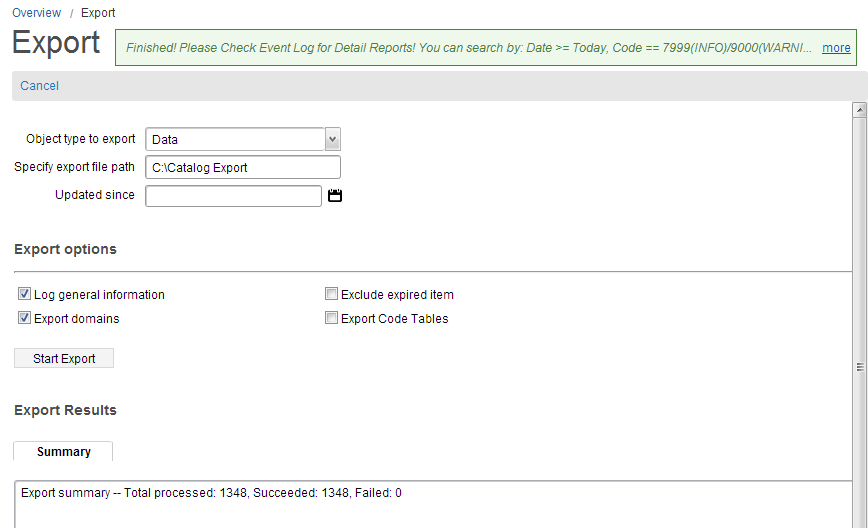

The export functionality allows you to export data, such as images, attachments, entire projects, or objects from Catalog. To export the entire catalog data, follow these steps:
| Field | Description | ||||||
|---|---|---|---|---|---|---|---|
| Object Type to import | This field indicates what type of object is being imported. The drop-down list has the following options:
|
||||||
| Specify export file path | This field allows you to specify the folder to save the exported catalog data file. By default, the data is exported in the XML format. The default name of the file is exportedCatalog.xml which is editable. |
||||||
| Updated since | This field allows you to specify a date that is used to filter the catalog data. | ||||||
| Log general information | When selected, this check box logs the information of imported data. | ||||||
| Exclude expired items | When selected, the expired items are not exported. | ||||||
| Export Domains | When selected, the domains are also exported along with catalog data. | ||||||
| Export Code Tables | Select this checkbox to export the code tables. |

Note: The Import and Export programs use the Template.xml files to load the Import File or export the Export File. If this file is not present in the <metadata home>/resources/Excel Template folder, the Import and Export programs will not work.
There are four levels of exports that are available in Catalog Management:
You can export your catalog from the command line in Windows and Unix. The catalog export syntax is as follows:
@echo off if ""%1""=="""" goto echoSyntax set CWOC_CLASSPATH=C:\EOC Product\14.x\14449 set CLASSPATH=%CWOC_CLASSPATH%\designer\Designer.jar;^ %CWOC_CLASSPATH%\lib\oracle\ojdbc6.jar;^ %CWOC_CLASSPATH%\lib\oracle\orai18n.jar;^ %CWOC_CLASSPATH%\lib\oracle\orai18n-mapping.jar;^ %CWOC_CLASSPATH%\lib\ilog\sdworkflowmodeler.deployed.jar;^ %CWOC_CLASSPATH%\lib\jdic\JDICplus.jar;^ %CWOC_CLASSPATH%\lib\axis2\addressing-1.41.mar;^ %CWOC_CLASSPATH%\lib\axis2\rampart-1.5.mar;^ %CWOC_CLASSPATH%\lib\axis2\mex-1.4.1.mar;^ %CWOC_CLASSPATH%\lib\axis2\wstx-asl-3.2.4.jar;^ %CWOC_CLASSPATH%\lib\axis2\rampart-core-1.5.jar;^ %CWOC_CLASSPATH%\lib\axis2\rampart-policy-1.5.jar; set JAVA_OPTS=-Xms1024m -Xmx1024m -XX:MaxPermSize=128m -Dcom.conceptwave.licenseDir="%CWOC_CLASSPATH%"\designer\env -Dcom.conceptwave.modules.path="%CWOC_CLASSPATH%"\modules "C:\Program Files\Java\jdk1.7.0_51\bin\java" %JAVA_OPTS% -cp "%CLASSPATH%" com.conceptwave.servicedesigner.ServiceDesigner -catalogexport %* goto end :echoSyntax echo ---------------------------------------------------------------------------- echo Syntax: catalogExport [-logFile logFile] username=? [password=?] server_url=? export_folder=? [export_type=?] echo [exported_objectid_list=?] [updated_since=?] [exclude_expired=?] echo [log_general_info=?] [export_domains=?] [export_codetables=?] echo [exclude_related_projects=?] [include_child_projects=?] [export_zip=?] echo ---------------------------------------------------------------------------- echo Note: password could be input from console. echo export_type: project, item, hierarchy, entire, codetable, default is entire. echo exported_objectid_list: ':' seperated object id string. echo export_codetables: only when the export type is entire. echo updated_since date format: yyyy-MM-dd. echo exclude_related_projects: only when the export type is project. echo exclude_expired: default is false. echo log_general_info: default is true. echo export_domains: default is true. echo export_codetables: default is false. echo exclude_related_projects: default is false. echo include_child_projects: default is false. echo export_zip: default is false. used only when the export type is project. echo ---------------------------------------------------------------------------- echo Example: catalogExport username=a password=b server_url=http://server:8080/cwf export_folder=c:/temp/ echo catalogExport username=a server_url=http://server:8080/cwf export_folder=c:/temp/ export_type=entire updated_since=2011-01-01 echo catalogExport username=a password=b server_url=http://server:8080/cwf export_folder=c:/temp/ export_type=item exported_objectid_list=ABC:DEF:HIJ updated_since=2011-01-01 echo catalogExport username=a server_url=http://server:8080/cwf export_folder=c:/temp/ export_type=project exported_objectid_list=ABC:DEF:HIJ export_domains=true log_general_info=false echo catalogExport username=a password=b server_url=http://server:8080/cwf export_folder=c:\temp export_type=codetable exported_objectid_list=ACC_CAN_TYPE:manufacturer echo catalogExport username=a server_url=http://server:8080/cwf export_folder=c:/temp/ export_type=project export_zip=true echo ---------------------------------------------------------------------------- :end
Where:
Note: The username, server_url, and export_folder are mandatory for exporting.